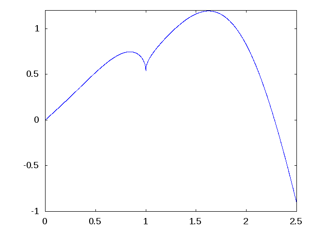
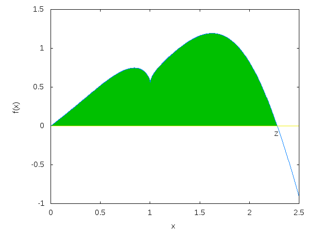

Skrypty i funkcje¶
Program, skrypt i funkcja¶
Warto rozróżnić trzy pojęcia, które w praktyce często są używane zamiennie, choć oznaczają coś trochę innego.
Program to ogólnie ciąg instrukcji prowadzących do wykonania określonego zadania. Program może być bardzo krótki albo składać się z wielu plików i funkcji.
Skrypt w Octave jest prostym programem zapisanym w pliku tekstowym, zwykle z rozszerzeniem .m. Zawiera kolejne polecenia Octave wykonywane od początku do końca w bieżącym obszarze roboczym. Można więc potraktować skrypt jako zapis sesji obliczeniowej, którą chcemy zachować, poprawiać i wielokrotnie uruchamiać.
Funkcja również zawiera kod, ale ma jasno określone argumenty wejściowe i wartości zwracane. Funkcję definiujemy po to, aby ten sam fragment obliczeń można było wielokrotnie wywoływać dla różnych danych. Funkcja ma własne zmienne lokalne i jest bardziej samodzielnym elementem programu niż skrypt.
Na początku najprościej zobaczyć różnicę na skrypcie. Zamiast wpisywać trzy polecenia bezpośrednio w konsoli:
możemy zapisać je w pliku programik.m:
Jeżeli plik programik.m znajduje się w bieżącym katalogu, uruchamiamy cały skrypt wpisując jego nazwę bez rozszerzenia:
Wynik:
Octave wykonuje wtedy kolejno wszystkie instrukcje zapisane w pliku.
Najważniejsza zaleta skryptu polega na trwałości i powtarzalności. Kod można poprawiać przez wiele dni, uruchamiać ponownie dla nowych danych, przekazać innej osobie i wrócić do niego po dłuższym czasie. Nie jest już ulotną serią poleceń wpisanych jednorazowo w konsoli.
Aby Octave znalazł skrypt, plik musi znajdować się w bieżącym katalogu albo na ścieżce wyszukiwania. Bieżący katalog można sprawdzić i zmienić poleceniami pwd i cd.
Komentarze i pomoc dla własnego kodu¶
Komentarze rozpoczynamy znakiem % lub #:
Komentarze umieszczone na początku pliku mogą pełnić funkcję dokumentacji. Po wydaniu:
Octave może wyświetlić opis zapisany w komentarzach.
Quiz ze skryptów¶
- Co to jest skrypt?
- Jakie rozszerzenie mają typowe pliki skryptowe Octave?
- Jak uruchamia się skrypt znajdujący się w katalogu roboczym?
- Jak sprawdzić bieżący katalog?
- Jakie są najważniejsze zalety zapisywania obliczeń w skryptach?
- Jak umieszczać komentarze w kodzie?
Zadania ze skryptów¶
- Wpisz początek nazwy polecenia
sombrero, np.som, i użyjTab, aby sprawdzić autouzupełnianie. - Sprawdź dokumentację:
- Wywołaj
sombreroz różnymi argumentami, np.30i100. - Sprawdź pełniejszą dokumentację poleceniem
doc sombrero. - Sprawdź, czy wygenerowany wykres można obracać, przybliżać i oddalać.
- Za pomocą
help sombrerosprawdź, gdzie znajduje się definicja tej funkcji. Następnie utwórz własny plikkolec.m, który będzie rysował funkcję
$$ z(x,y)=2^{-\sqrt{x^2+y^2}}, \qquad -4\le x,y\le4. $$
Dodaj własny komentarz i sprawdź, czy pojawia się po wydaniu help kolec.
Definiowanie funkcji¶
Funkcje użytkownika również zapisujemy w plikach .m. Załóżmy, że chcemy zdefiniować funkcję sinusik, która przybliża sinus wielomianem Taylora:
Na początek zdefiniujmy ją dla argumentu skalarnego. Plik sinusik.m może mieć postać:
Wywołanie:
zwraca wartość zbliżoną do \(\sin(0.1)\).
Podstawowe zasady¶
- plik powinien mieć nazwę odpowiadającą nazwie głównej funkcji,
- funkcja może przyjmować wiele argumentów,
- funkcja może zwracać jedną lub kilka wartości,
- instrukcje wewnątrz funkcji zwykle kończymy średnikiem,
- funkcja może korzystać z innych funkcji pomocniczych.
Przykład kilku argumentów:
Przykład kilku wartości zwracanych:
Średnik na końcu instrukcji zapobiega wyświetlaniu jej wyniku. Podczas szukania błędów czasem celowo go pomijamy, aby zobaczyć wartości pośrednie.
Odwzorowania i wektoryzacja¶
Jedną z najważniejszych własności Octave jest możliwość wykonywania wielu obliczeń bez jawnego pisania pętli.
Wiele funkcji działa element po elemencie na całych wektorach i macierzach. Przykładowo:
zwraca:
czyli:
Funkcje takie jak sin czy cos, które potrafią działać element po elemencie na całych tablicach, są w dokumentacji Octave określane jako mapping functions. Nie jest to jednak to samo co wektoryzacja. Wektoryzacja oznacza sposób zapisu obliczeń na całych wektorach i macierzach bez jawnego wykonywania tej samej operacji w pętli. Funkcje typu mapping bardzo często ułatwiają więc wektoryzację, ale oba pojęcia nie są synonimami.
Przykład:
Nie każda operacja w Octave automatycznie działa w ten sposób. Szczególnie ważne jest odróżnienie algebry macierzowej od operacji wykonywanych element po elemencie.
Dlaczego funkcja sinusik wymaga poprawki?¶
Nasza pierwsza wersja:
działa poprawnie dla liczby, ale wyrażenia x^3 i x^5 mają w Octave znaczenie potęg macierzowych, gdy x jest macierzą.
Dlatego funkcję przeznaczoną także dla wektorów i macierzy zapisujemy:
Teraz możemy wykonać:
i otrzymać cztery wartości naraz.
Operatory „z kropką”¶
Kropka przed operatorem oznacza zwykle, że działanie ma zostać wykonane element po elemencie.
Najważniejsze pary operatorów są następujące:
| Operacja | Macierzowo | Element po elemencie |
|---|---|---|
| mnożenie | A * B |
A .* B |
| dzielenie prawostronne | A / B |
A ./ B |
| dzielenie lewostronne | A \ B |
A .\ B |
| potęgowanie | A ^ B |
A .^ B |
Dodawanie i odejmowanie wykonuje się zwykłymi operatorami + i -; nie potrzebujemy dla nich osobnych wersji „z kropką”.
Mnożenie: czyli różnica między * oraz .*¶
Dla macierzy:
mnożenie element po elemencie:
daje:
Natomiast:
oznacza zwykłe mnożenie macierzowe i daje:
Są to dwie zupełnie różne operacje.
Dzielenie: /, \, ./, .\¶
Dla liczb nie ma problemu:
dają ten sam wynik.
Dla macierzy A/B i A\B są jednak operacjami algebry liniowej. Intuicyjnie można je traktować jako rozwiązywanie odpowiednich równań macierzowych, bez jawnego obliczania macierzy odwrotnej.
Natomiast:
dzieli odpowiadające sobie elementy, a:
jest lewostronnym dzieleniem elementowym; elementowo odpowiada relacji B ./ A.
Potęgowanie: ^ a .^¶
To rozróżnienie jest szczególnie ważne.
oznacza potęgę macierzową, czyli dla macierzy kwadratowej w praktyce \(A A\).
Natomiast:
podnosi każdy element macierzy osobno do kwadratu.
Przykład generujący kolejne potęgi liczby 2:
daje:
Tutaj kropka jest niezbędna, ponieważ chcemy podnieść liczbę 2 kolejno do wszystkich potęg zapisanych w wektorze 1:10.
Kiedy kropka nie jest potrzebna?¶
Przy mnożeniu przez skalar:
i:
dają ten sam wynik.
Podobnie:
i:
są równoważne.
Nie wolno jednak na tej podstawie zakładać, że kropkę można zawsze pomijać. Gdy oba argumenty są wektorami lub macierzami, różnica pomiędzy operacją macierzową i elementową staje się zasadnicza.
Dokumentacja własnej funkcji¶
Komentarz umieszczony na początku pliku z funkcją może zostać wyświetlony przez help:
% Funkcja sinusik przybliża sin(x) wielomianem stopnia 5.
% Przybliżenie jest dobre dla małych |x|.
function y = sinusik(x)
y = x - x.^3/6 + x.^5/120;
end
Po zapisaniu pliku jako sinusik.m warto sprawdzić:
Pliki z funkcjami a skrypty¶
Zarówno skrypty, jak i funkcje zapisujemy w plikach .m, ale pełnią inną rolę:
- skrypt zawiera sekwencję instrukcji wykonywanych po kolei i działa w bieżącym obszarze roboczym,
- funkcja ma własną listę argumentów i wartości zwracanych oraz własny obszar zmiennych lokalnych.
W typowym pliku funkcyjnym pierwszą istotną instrukcją jest definicja funkcji.
W jednym pliku mogą znajdować się także funkcje pomocnicze wykorzystywane przez funkcję główną.
Quiz z funkcji¶
- Dlaczego funkcje warto umieszczać w osobnych plikach?
- Jak definiuje się argumenty funkcji?
- Czy funkcja może zwracać kilka wartości?
- Dlaczego instrukcje w funkcji często kończymy średnikiem?
- Co oznacza wektoryzacja obliczeń i czym różni się od funkcji typu mapping?
- Czym różni się skrypt od pliku zawierającego funkcję?
- Jaka jest różnica między
A*BiA.*B? - Jaka jest różnica między
A/BiA./B? - Jaka jest różnica między
A\BiA.\B? - Jaka jest różnica między
A^2iA.^2? - Dlaczego w
sinusikużywamyx.^3, a niex^3? - Co zwróci
2.^(1:10)?
Zadania z definiowania funkcji¶
Zadanie 1¶
Zdefiniuj funkcję
W Octave przydadzą się funkcje sqrt i abs. Funkcja powinna działać także dla wektora argumentów.
Zadanie 2¶
Narysuj \(f(x)\) dla \(0\le x\le2.5\). Możesz zacząć od:
Przykładowy wynik:

Zadanie 3¶
Z wykresu oszacuj jedno z miejsc zerowych funkcji, a następnie wyznacz je numerycznie za pomocą fzero lub fsolve.
Zadanie 4¶
Oblicz pole pomiędzy wykresem \(f(x)\) a osią \(x\) na odpowiednim przedziale, korzystając z numerycznego całkowania.
Na odzyskanym rysunku obszar całkowania zaznaczono kolorem:

Zadanie 5¶
Sprawdź działanie następujących wyrażeń i wyjaśnij różnice: